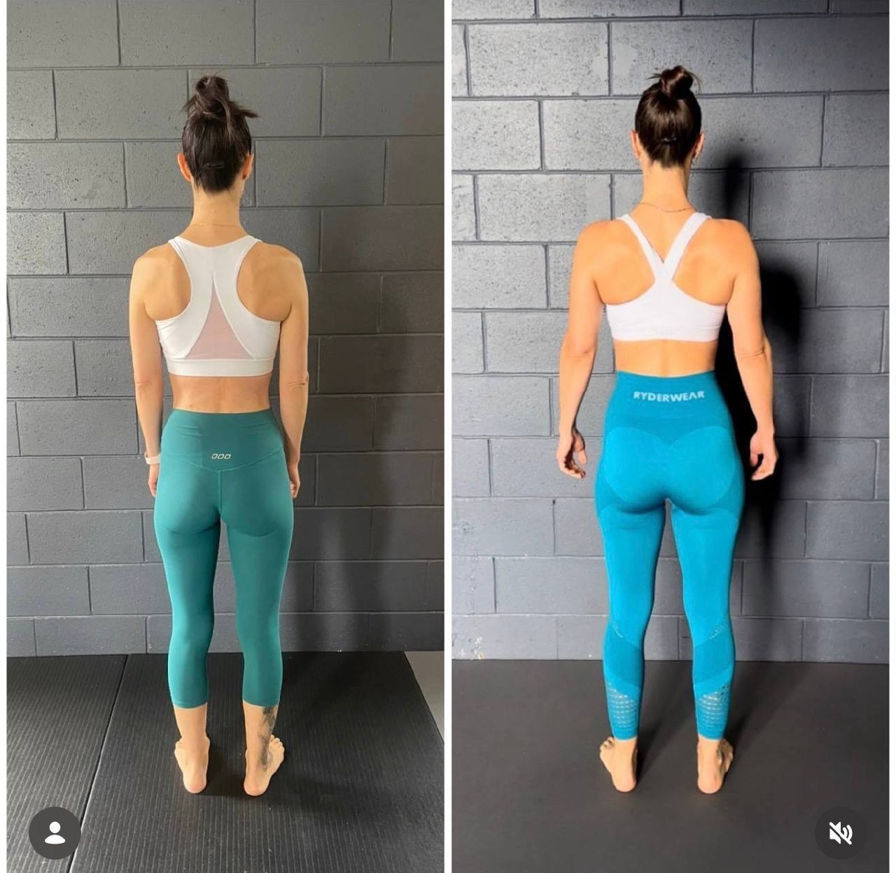
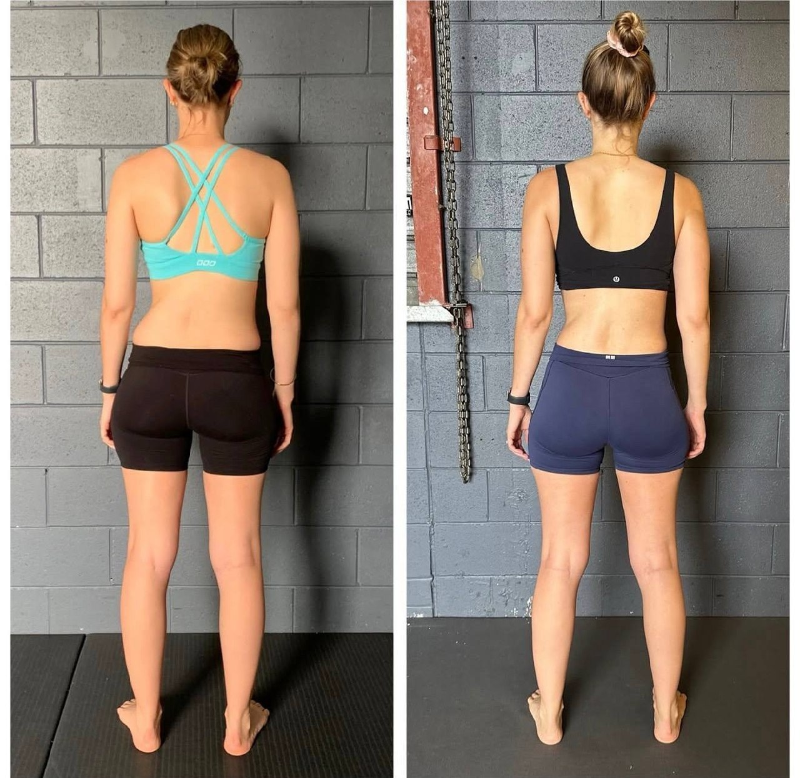

You've probably heard it:
"There's no such thing as bad posture"
"Your body is resilient"
"Just move more and you'll be fine"
Sounds comforting.
But if posture didn't matter, you wouldn't see:
Forward head positions linked with neck pain
Rib flares tied to lower back compression
Collapsed arches affecting knee and hip loading
And you definitely wouldn't feel your back tightening after a long day in a poor position.
Your body isn't random. It responds to how it's organised.
Posture is not just how you look — it's how you handle force
Posture isn't about:
Sitting up straight
Looking "aligned"
Holding a position
Posture is about:
How your body distributes force under gravity
Every second you're alive, your body is managing:
Compression
Tension
Rotation
Ground reaction forces
If your posture is off, those forces don't disappear.
They get absorbed somewhere else.
Why your back is taking the hit
When posture breaks down, the body shifts load.
Instead of:
Force being shared across hips, core, and upper body
You get:
Excess load through the lumbar spine
Overuse of spinal erectors
Chronic tension and fatigue
This is why your back:
Feels tight all the time
"Locks up" after sitting or standing
Keeps getting re-injured
It's not weak. It's overworked.

The research people misunderstand
There's a wave of messaging saying:
"Posture and pain aren't strongly linked"
That conclusion comes from looking at static posture in isolation.
But that misses the key point:
Your body doesn't live in static positions.
It lives in:
Movement
Repetition
Load over time
When posture is consistently inefficient, you are feeding your body poor mechanical input all day, every day.
This is where Mechanotransduction becomes relevant.
Your body adapts to your posture (whether you like it or not)
Mechanotransduction shows that cells respond directly to:
Mechanical stress
Tension
Load distribution
Over time, your body remodels itself based on:
How you sit
How you stand
How you walk
So if your posture consistently:
Compresses certain areas
Overloads certain tissues
Avoids proper rotation
Your body will adapt to that.
Not in a good way.
Why "just fixing your posture" doesn't work
You can:
Pull your shoulders back
Tuck your chin
Sit up straighter
But if your body can't support that position:
It won't last.
Because:
Your muscles aren't coordinated to hold it
Your movement patterns don't reinforce it
Your system defaults back to efficiency
So you end up stuck in a loop:
Correct posture
Hold it briefly
Fatigue
Collapse back into old pattern
The real issue: your posture isn't supported by your movement
Posture isn't separate from movement.
It's a reflection of it.
If your:
Walking pattern is inefficient
Rotation is limited
Force isn't transferring properly
Then your posture will always drift back to where your system can function.
Even if that position causes pain.

What actually improves posture (and reduces back pain)
If you want posture to hold, you need to change the system underneath it.
1. Reorganise the ribcage and pelvis
This is the foundation of force distribution.
If this relationship is off:
The spine compensates
The back takes more load
2. Restore rotational capacity
Your body is built to rotate.
Without it:
You lose efficient force transfer
The lower back becomes a substitute
3. Integrate it into gait
This is where most people fail.
You take thousands of steps per day.
If those steps:
Reinforce poor mechanics
…you undo any progress from training.
Why this works long-term
Because you're not:
Forcing posture
Chasing symptoms
You're:
Changing mechanical inputs
Improving coordination
Letting posture emerge naturally
The Functional Patterns approach
At Functional Patterns Brisbane, posture is a key focus—but not in the way most people think.
We assess:
How you distribute force
How your body moves under load
Where your posture breaks down
Then we:
Rebuild movement patterns
Improve rotational mechanics
Integrate everything into real-world function
So your posture:
Holds without constant effort
Reduces strain on your back
Actually translates into daily life
Who this is for
This is for you if:
You feel like your posture is "off" and nothing fixes it
Your back keeps tightening or getting sore
You've tried cues, stretching, or strengthening without lasting change
You want a structural, long-term solution
The bottom line
Posture absolutely matters.
But not as something you force.
As something your body organises itself into based on how it moves.
If that organisation doesn't change, your pain won't either.
Want to fix your posture properly?
If you're in Brisbane and want a clear breakdown of your posture and why your back is overworking:
Book an Initial Consultation at Functional Patterns Brisbane.
We'll show you:
How your body is currently distributing force
Why your posture isn't holding
What needs to change to fix it